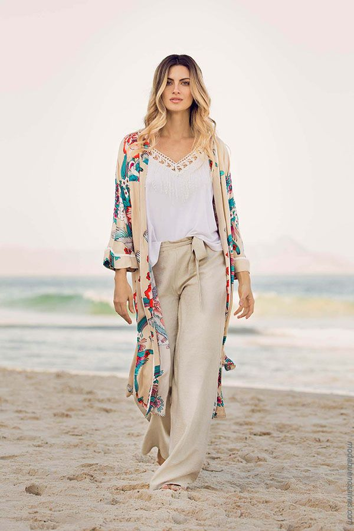

Esta temporada viene llena de color y texturas nuevas. Recuerda encontrar tus outfits que más se acomode a tus actividades diarias.
Esta temporada viene llena de color y texturas nuevas. Recuerda encontrar tus outfits que más se acomode a tus actividades diarias.
Son pantalones tan versátiles que son válidos para cualquier ocasión.
Puedes combinarlos desde con prendas sofisticadas como prendas ajustadas y cortas, o piezas superiores con volumen y desestructuradas.
Ideales para quienes aman la comodidad y al mismo tiempo lucir espectaculares.
Pueden ayudar a que te veas y te sientas realmente femenina y atraigas la mirada de todo aquel que se cruce a tu paso.
Los sombreros son usualmente un accesorio de día. Como todo lo referente a la cabeza tienes que tomar en cuenta tus facciones para elegir el que mejor se adecue a tu rostro.
El sombrero mas usado, se lleva en cualquier tiemporada del año. Tiene alas cortas y en la parte delantera tiene una ligera caída dando la ilusión de que es un poco más larga el ala frontal.
Lo encontrarás en algodón, fieltro (ideales para el invierno) y de paja (adecuado para usarlo en verano).
Sombrero de alas anchas y generalmente usado de día apropiado para protegerse del sol.
En su versión formal se usa con trajes de dos piezas y en la informal es un modelo clásico para la playa.
Las pamelas pueden ir decoradas con lazos, cintas, flores, plumas, tules u otro tipo de ornamentos.
Dale un respiro a tus pies y a tu columna, usa flats más seguido. Son fáciles de combinar.
Dale un respiro a tus pies y a tu columna, usa flats más seguido. Son fáciles de combinar, te mantienen en tendencia y te dan seguridad a la hora de caminar.
Todas las amamos, porque estiliza y nos da un look femenino y muy atractivo.
Este tipo de calzado es para un look casual, atrevido y te hara lucir casual.
Pueden ser útiles a la hora de querer lucir sexy y sofisticada